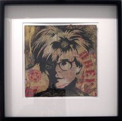

Christopher Makos
From The Giant: The Definitive Obey Giant Site
From his official biography:
Born in Lowell, Massachusetts, Christopher Makos grew up in California before moving to Paris to study architecture and later, to work as an apprentice with Man Ray. Since the early '70s he has worked at developing a style of boldly graphic photojournalism. His photographs have been the subject of numerous exhibitions both in galleries and museums throughout the United States, Europe and Japan and have appeared in countless magazines and newspapers world-wide. He has been a seminal figure in the contemporary art scene in New york. He is responsible for introducing the work of Jean-Michel Basquiat and Keith Haring to Andy Warhol.
Makos has produced four books. The first, White Trash, published by Stonehill Publishing Company, documents the pre-punk club scene in New York City. His most recent book, Warhol: A Photographic Memoir, published by New American Library, chronicles his close friendship and extensive travels with Andy Warhol. Henry Geldzahler, the former curator of contemporary art at the Metropolitan Museum of Art in New York City, writes in the introduction to the book: "It is a great asset in Chris Makos' photographs that they reveal new and unfamiliar faces of the legendary pop figure Andy Warhol." Warhol by Makos features 150 black and white photographs of Andy taken around the globe. From Beijing and Barcelona to Aspen and Dusseldorf, Makos' photographs capture the world of Warhol in fashion, travel, shopping, photography and art. Makos' relationship with Warhol was unique: they were not only close friends for over ten years, but often collaborated together, most notably on the book, Exposures, which Makos art-directed.
It was Warhol who called Makos "The most modern photographer in America." Makos' photographs have been published in Interview, Rolling Stone, House and Garden, Connoisseur, New York Magazine, Esquire, Genre and People, among others. His portrait of Warhol wrapped in a flag was featured on the front cover of the Spring 1990 issue of the Smithsonian Studies, the academic journal of the Smithsonian Institute. His photographs of Warhol, Keith Haring, Tennessee Williams and others have been auctioned regularly at Sotheby's.
Though internationally famous as a photographer, for the past few years Makos has also directed his energies to creating paintings and original silkscreens. From portrait commissions on canvas to eye paintings, Makos has created silkscreen and serigraph portfolios. His Man Ray portfolio is a tribute to Makos' first mentor and was published in honor of the artist's 100th birthday. The portfolio consists of two prints, one a portrait of Man Ray, the other a portrait of his passport. Makos' Icons portfolio is a collection of silkscreen portraits of Andy Warhol, Elizabeth Taylor, Salvador Dali, John Lennon and Mick Jagger.
More Christopher Makos work can be seen at his studio's webpage.
A Makos portrait of Andy Warhol serves as the basis for 1/4 of Shepard Fairey's 2003 work Radicals, the basis of Shepard Fairey's 2004 work Warhol, and the model for several Fairey fine art pieces.
|  |
{kind=link}
{kind=link}
{kind=link}
{kind=link}
{kind=link}
© Copyright |
|---|
| This page contains an image or images of drawings, paintings, photographs, prints, or other two-dimensional works of art, for which the copyright is presumably owned by either the artist who produced the image, the person who commissioned the work, or the heirs thereof. It is believed that the use of low-resolution images of works of art for critical commentary on the work in question, the artistic genre or technique of the work of art, or the school to which the artist belongs on the English-language website thegiant.org, hosted on servers in the United States, qualifies as fair use under United States copyright law. |